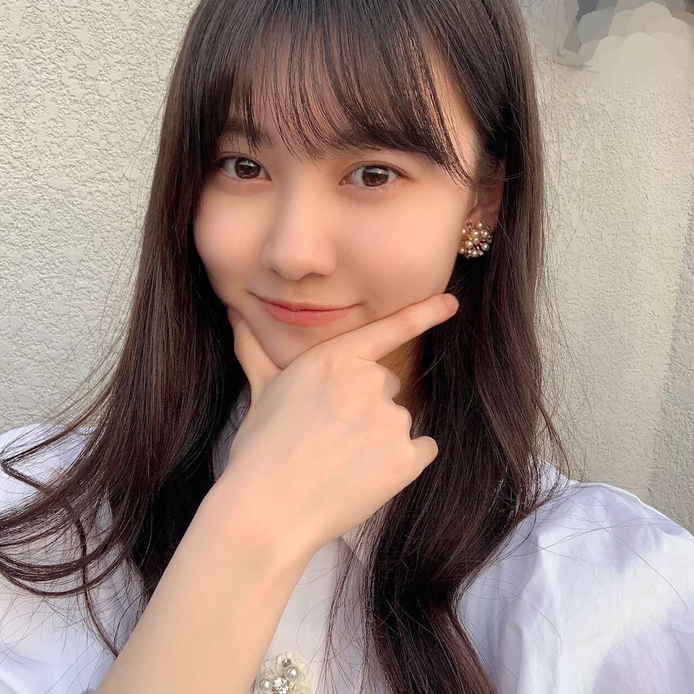
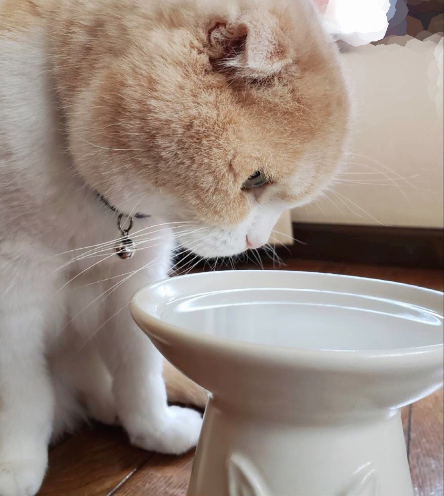
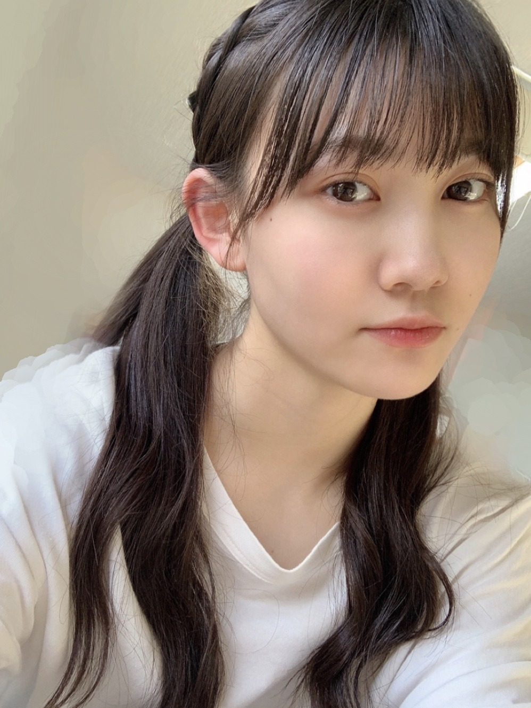
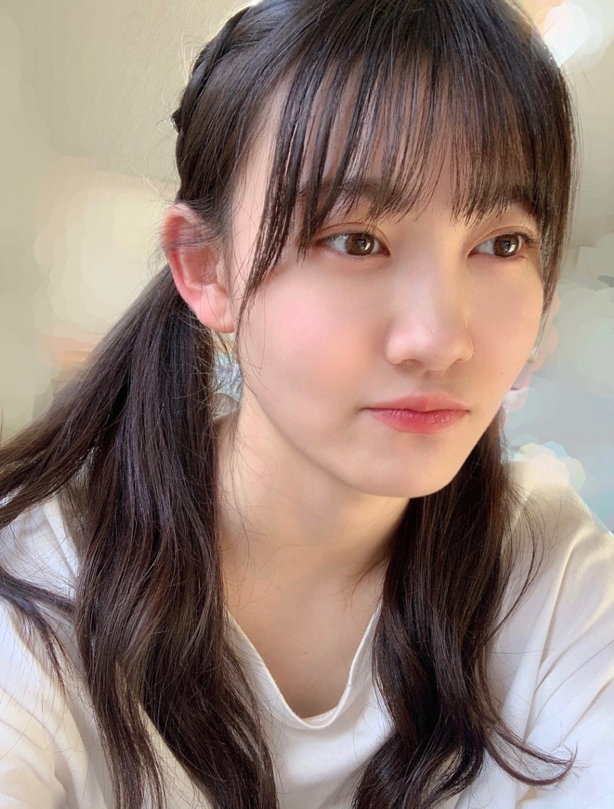

2020/0530Sat空がどこまでも青くて幸せです。松尾美佑
夕方に一瞬だけ雨が降る日がありました
小さい頃は正直雨が苦手でしたが
何かのテレビで雨が降らないと野菜が困る事を知ってからは、
雨の日は野菜達の喜びを想像しています。
夕立のあとの太陽がちょこっと微笑んでいる時間が本当に綺麗です。
「夕立も予測できない未来も嫌いじゃない」
です。
開いて下さりありがとうございます。
瑠奈ちゃん巻き髪ポンパドール了解です！
ありがとう☺︎
千葉県出身高校1年16歳の
松尾美佑(まつおみゆ)です。

【ちょっと髪巻きました】
よろしくお願い致します。
『世界には愛しかない』 (欅坂46さん)
研修生ツアーで披露させて頂きました。
私は曲中のポエトリーもさせて頂きました。
ポエトリーに気持ちを込める為に、
ダンサーさんが『世界には愛しかない』の中の "僕" の物語を教えて下さりました。
本当に感動しました。
私は全ての曲に物語があると思います。
大きなノートに歌詞を書くのが好きです。
好きな言葉や重要だと思う言葉は少し大きめに書いて、
曲のイメージに合わせて文字もちょっこっとずつ変えたりして、
凄く楽しいです。
曲の中に見える景色を想像して、
すると物語が見えてきます。
作詞をされた方が想われて書かれた物語と
私から見えた物語は違うかもしれませんが、
同じ曲でも人によって見える物語が違う事もとても素敵だと思うのです。
物語を沢山の人に伝えられるようなパフォーマンスが出来る人になりたいです。

【(ง ꙭ)ง】
まだ言っていなかった事があります。
でも瑠奈ちゃんが以前少し書いてくれていて、
コメントでも頂きました。
「きなこさんって、何ですか？」 と。
きなこさんは、
猫です^._.^

【じーーっ( Ꙭ)】
大人しくて、マイペースで、大人っぽい、
女の子です。
猫パンチをすると見せかけて、本当に叩くことは無いです。手を小さくひょいひょいします。
生まれてからの年数は私よりも1つ下です。
でも何だかお姉さんみたいで、
"きなこさん" と呼びます。
まるはいつもきなこに猛アタックしています
まる : 仲良くしよーよー！！！！！
きなこ : 元気ねぇ、小ちゃいの。
まる : ねーねー遊ぼーよー！！！！
きなこ : ふいっ。
として、終わります。
まるの片想いです。

【･-･】
沢山ヘアアレンジのコメントありがとうございます¨̮
ツインテール、ポニーテールと同じくらい多く頂きました。
久しぶりにしてみたら何が正しいのか分からなくて顔が真顔です。
左右編み込みが大好きなのでツインテールでも結び目の上までは編み込みました。
ゆる〜く細めに全体の髪を巻きました。
¨̮お返事コーナー¨̮
✽好きな教科は何ですか？
(私のみゆちゃんのイメージは体育と社会が好きそうです笑)
世界史と生物と中学までの数学です
文理選択に迷いに迷って文系です¨̮
体育も好きですよ！
✽好きなケーキの種類を教えて？
いちごのタルトとティラミス！！
いちごじゃなくても基本タルトが大好きです
ティラミスも大好きです
✽短距離、長距離どっち走るの得意ですか？
圧倒的短距離派です。
持久走が嫌で嫌で、中1の時の体力テストの
1000m走 7分半くらいかかりました。
でも聞いてください、中2は3分50秒でした
✽学校で思い出に残っている行事などはありますか？
中3の時の修学旅行です
初めて近畿地方に行きました。
✽今ハマってることは何？
可愛いケーキが出来上がるまでの動画を見る事です( Ꙭ)
密かに作ってみたいなと思っちゃったりしていたりします。
✽｢千葉県は島｣説、信じますか？
そんな説あるんですか？！初耳ですᐠ( ᐝ̱ )ᐟ
✽ 今、元気〜！？
元気〜〜〜〜！！！！！！
(何この可愛い質問)
昨日
「欅共和国2017」を見させて頂きました。
本当に鳥肌が立ちっぱなしでした。
メンバーの皆さんのかっこいい曲での表情や指先だけが写った時の綺麗さに感動しました。
眼力や後姿でも見て下さる方の心をドキッとさせられるパフォーマンスを出来る人になりたいです。
本日もとても楽しみです！
さぁ〜
明日はなお〜〜〜です。
なお〜って心で思っているのに先日普通に
"なおちゃん"って電話で言ってしまいました
あちゃちゃ〜
なお〜です。沢山練習します☺︎
なお〜
最後まで読んで下さりありがとうございます。
また5日後！

ツインテールがよく分からない！！
ミュウでした¨̮
コメント(310)
初めてコメントします。
ここで質問です！
1.日向坂46の髙橋未来虹ちゃんとのエピソードや写真などを載せて欲しいです！
2.ツアーの中で好きな衣装を教えてください！
3.過去か未来にもし行けるとしたらどちらに行きますか？
よろしくお願いします
みゆちゃん！かわいい！
私も圧倒的短距離派です〜
ブログ面白かったです！！！
お疲れ様！
猫と犬両方飼ってるんやね！
短距離走のタイムはいくつだった？
美佑ちゃんのパフォーマンスいつか見たいな〜
ネコちゃんも飼ってるんですね！？
きなこちゃん感がすごい。。笑
また、更新楽しみにしてます！！
ヘアアレンジめっちゃかわいいです！写真フォルダー潤いました
私も圧倒的短距離派です！何回も同じとこ走り続けるのしんどくて長距離は大嫌いです
今日やっとアップトゥーボーイ買えたので家帰ったら見ます！
またブログ待ってるね！
チャァオ～～!☆彡
ミュウちゃん❕❤️❤️❤️❤️❤️❇️❇️❇️笑顔❇️❇️❇️
ツインテール、めちゃめちゃ～～～⤴️⤴️
めためた可愛いぃ～～⤴️⤴️です❕❤️❤️❤️❤️❤️❇️❇️❇️笑顔❇️❇️❇️
マジ可愛❕❤️❤️❤️❤️❤️❇️❇️❇️笑顔
❇️❇️おすまし！⚜️❇️⭐彡
まず、ブログありがとうございます！
唐突ですが、質問させてください！
オーディションを受けようと思ったきっかけはなんですか？また、そのために心がけていたことはなんですか？
ツインテール最高すぎてやばいです！握手会の時とかにそれ見たすぎます！
ポニーテールの意見も多かったんだね！いつか見てみたい！
安定で可愛い美佑ちゃんが好きです！
これからも応援してます！
巻き髪似合いますね
めっちゃ好きです
歌詞を読むのは良いですよね
僕は書きはしないですが、よく読みます
歌詞の世界観ならeddaさんというアーティストさんがオススメです
小説みたいで面白いですよ
きなこさんも可愛いですね！
またツーショットとかも見てみたいです
今日の欅共和国も見るんですかね？
またの更新楽しみにしています
ミュウ ちゃんの巻き髪好き！
お姫さまみたい〜(*´ー｀*)
欅共和国2017私も観たよ！
今日も観るー！
不協和音と誰のことを1番愛してる？が楽しみだなぁ。
質問
◯好きなじゃがりこの味は？
◯欅坂、日向坂で好きな曲は？
課題大変な中お疲れさま！
応援してるよー！
れな
今日は一言。
ツインテールごちそうさまでした。
これだけを伝えたいほど、可愛くて衝撃的でした(笑)
歌詞も直接的表現をしたり、照れ隠しなのか、比喩表現をしたり、世相を反映した語句を織り交ぜたり、色々で受け取り方も様々ですね！洋楽の和訳をたま〜に調べるんですけど、少しニュアンスが違うのとかあって、へぇ〜と思う事とかあります。面白いかも。
今日は勝手ながらカレーを食べるひなのでスーパーでも行って、お惣菜コーナーでも覗いてこようかな！って感じなんだけど、スープカレーってどっかで売ってませんかね？時々カフェなどのメニューにあって、気になってたのを思い出しちゃって、どっかであったら、食べてみます。
将来スープ屋さんもいいかなぁ、これからは暑くなるから、冷たいスープとかも考えるのも面白そう！例えば、名前しか知らないですけど、ビシソワーズとか響きがお洒落だよね！本場の人っぽく「ウィ、ビシソワ〜ズ」なんて言ってみたりして、せっかくだから、他のスープもそれっぽく「ウィ、冷やしカレ〜」とかちょっとダサイ感じになったリして、、でもカレーって言ったらご飯が欲しくなるかもしれないよね！ご飯もメニューに入れといた方がいいかなぁ、スープ屋さんだからあまり売れないかもしれないからなぁ、お米を無駄にしたくないよね！。
暇だから、棚でも作ろうかと思ってホームセンターに木材を買いにいった時に“パイン材”ってあって、パイナップル？とか思ってスマホで調べたら、松だってさ！そう言えばそうだと納得しました。英語名と日本名で意外と思う事でした。暇と棚って似てませんか？
継続は力なり！って言うけど、自分結構飽きっぽいので、何か続いてるのって凄いです。自分もコメント結構続いてるんですけどね。
それでは
めっちゃツイン似合ってる
大阪より愛を込めて
曲の歌詞って改めて歌詞カードとか見ながら聴いてると、ほんまに深いなぁって思う。今までは気づかんかったニュアンスとか、ストーリーとかが見えてきてよりその曲が好きになる！ミュウちゃんは自分でストーリーを描けるってすごい！ミュウちゃんなら作詞とかできそう！！ミュウちゃんの書いた歌詞見てみたい。時間あるから、乃木坂のCDを持ってきて歌詞カード見ながら聴いてる。メロディが好きな曲もあるけど、歌詞が好きな曲っていうのもあって音楽ってすごいなと思ってる毎日です笑
のぎ動画スタートするみたいやね！！あんなにコンテンツ充実してるのに月額1200円でしかも寄付までされるとか、こんなに神コンテンツはないなと。すでに加入が決定してます。 ちょうど46時間TV終わった日からやから睡眠不足で倒れそう笑 46時間TVに全力注いで、のぎ動画はゆっくりと見ようかな。色々なこと発表してくれて嬉しい！！この状況でも楽しみがあるから頑張れる！！ミュウちゃんと会えるのが1番楽しみ。安全な状態になるまで待ってるね！ではでは次のブログで。いつもありがとう。
ツインテールめっちゃ可愛い！！！
「世界には愛しかない」、めっちゃいい曲だよね！初めて欅の握手会行ったのがこの曲の時だったな、懐かしい笑笑
ミュウちゃんと握手できる時のシングルはどんな曲かな？楽しみにしてます！！！
体調には気をつけてね、応援してます！！
-質問-
自分で歌詞作ったりはしますか？
巻き髪すっごく可愛いよ！！！
ミュウちゃんの真顔見たことなかったかも。笑
持久走の中1と中2の振れ幅にびっくり！笑
僕もミュウちゃんと同い年で文系です！
『まる』と『きなこ』！いろんなメンバーのペットの名前覚えるの大変だけど覚えます！
また5日が楽しみにしてます！
５日は早いね〰️
すぐに順番が回ってくるね
ミュウの笑顔好きです
絵顔の良い女子大好き（特にミュウ）
今のままのミュウでいて欲しいな
その笑顔、皆を幸せにするよ
世界中の隣人よ
良い曲だよね〰️
卒業生も大勢出てきて感動した
現役メンバーと卒業生
乃木坂の絆が見えた気がする
それと
46時間TV頑張ってね
４期生16人で力を合わせて頑張って
それではこの辺で
かっきーと同郷の マサシ⊿
ビックリ
ミュウちゃんがどんどん可愛くなってる！
きなこさん可愛い〜
もちろんミュウちゃんも！！
〈質問です〉
・モチベーションをあげる時は何をしますか？
答えてくれたら嬉しいです！！
今後のブログも楽しみに待ってます！
体調には気をつけてね！
応援してます！
大好きです♡
好きなポケモンはやっぱり
「ミュウ」なのかな？？（笑）
自撮り多めで嬉しい！
今日もブログ更新ありがとございますた！
ほなまた5日後
これからもしてほしいなあ。＾＾
きなこさん可愛いね。☺︎
ブログ更新ありがとね!!♡
これで7回目のブログだね!!☺︎
ミュウ尊い〜！！大好き♡
また5日後楽しみに待ってます!!
みにいより!!
磨き上げた技を、練り上げた気を、生きてきた道を、全てをこの一の太刀に
以上です。
かわいい
きなこさん癒しだね
今回は自撮りが多くて嬉しみです
自分も猫ちゃん大好きなんできなことまるに会ってみたいです！
でも美佑ちゃんに1番会いたいです笑
ではまた5日後ね〜
らん
"世界には愛しかない"いい曲だよね〜！
好きでよく聴いてます！
巻き髪してる美佑ちゃんすごく大人っぽくていい！！
ツインテールも可愛くて好きです！
実は明日誕生日なんです！祝ってください！
また5日後のブログ楽しみにしてるね！！ばいばい〜！
握手会再開されたら絶対行くね！
質問
〇岐阜に住んでるんですけど来た事ありますか？？
〇自由に遊びに行けるようになったらどこへ旅行したい？？
〇4期生の曲で1番好きなのはどれ？？
ブログの出だしのポエム、とてもすてきですね。
昨日の欅共和国2017、僕も見てましたよ。パフォーマンス、とてもかっこよかったですね。
猫のきなこさん、かわいいですね。
タルトケーキ、僕も好きですよ。特にフルーツタルトが大好きです。
４枚目の写真のミュウちゃん、めっちゃかわいいです。髪型、めっちゃ似合ってます。
ミュウちゃん、体調に気をつけてね。
またコメントするね。
いいね！。みゆスマイル！。
ツインテールが可愛すぎてびっくりした( ´•̥ו̥` )♡
ほんと可愛い！！！握手会始まったらツインテールしてください！！！（笑）
早く会える機会ができますように
質問です！46時間テレビのツーショットトークでみゆちゃんは誰とお話したいですか？？
よかったら教えてほしい〜( ˶ ̇ ̵ ̇˶ )♡
ブログ更新ありがとう！
アップトゥーボーイ買ったよー
めちゃくちゃ可愛く何回も見ちゃうよー
質問！
1、2、3期生のなかで仲のいいメンバーいる？
ミュウ大好き
猫も可愛いしツインテールのミュウちゃん可愛い٩(*´︶`*)۶
ねえねえ聞いてくださいよ！
うちの県梅雨入りしたんですよ⁉︎
もう梅雨ですよ⁉︎あり得なくないですか⁉︎
年末楽しみだーとか言ってたのがもう半年前なんて・・・
そこで！
(^｡^) 質問 （＾_＾） です！
○雨の時って逃げ水聞きたくなるんですけど、逃げ水
好きですか？
○虹のふもとに宝が眠っているという話を信じたことは
ありますか？
天気は雨でも心は快晴です！
いつも元気もらってます
質問
好きなユーチューバーは？
好きな服は？できれば見せてください！
みゆ！
やっほー！
ひろき(Yandji)です☺️
ブログ更新ありがとー！！！
質問タイムー！！！
いま一番楽しみなことは？
また、コメントするね！
では、またねー！
ひろき(Yandji)より
夕立のあとの太陽がちょこっと微笑んでる時間が本当に綺麗
この文章読んですごい分かる……！って共感しまくりだったよ(..) あの時間が私も大好き☺︎
巻き髪すごくすごく似合ってるし可愛い〜♡♡どの髪型も好きだけどゆるっと巻いた髪型の美佑ちゃんが個人的にはとっても好きです(*´꒳`*)
きなこさん可愛い
☆お家時間ではまってることや好きな時間はありますか？
☆好きな本があれば教えてほしいっ
☆好きなブランドや洋服のテイストは何ですか？
☆スタイルの良さの秘訣を教えてください☺︎(美佑ちゃんのスタイルが憧れです♡)
たくさんになってしまいました…。
美佑ちゃんの言葉選びが大好きで毎回のブログ楽しみにしてます(*´ー｀*) また5日後に会いましょう〜
またコメントするね♪
こちら最近雷雨が多いです。だんだん夏に近づいてますね(´∀｀)
僕も長距離走が苦手です( ；∀；) 1年で何があった！？ってくらいタイムが速くなったんだねw 部活に一生懸命だからかな^_^
生物面白いよね！僕は生物基礎しか習ってないけど、1番面白い分野は免疫かなぁ。身体の中で白血球たちが頑張ってくれてる事実を知って自分の体もそう弱くないってわかりましたね(´∀｀)
世界史だとイスラームのところが好き！ミュウちゃんはどの分野が好きですか？
毎回自分の話が濃い目でブログの感想とか全然書けてなくて申し訳ないです( ；∀；) ミュウちゃんのブログ読んで共感することが結構あるから、そういうこと書き並べると自分のことでいっぱいになってしまうのです。
そして、ネコちゃんが可愛い(o^^o)
更新ありがとう！次回も楽しみにしてます！
では！バイジョーじ！
ブログ更新ありがとう〜(´˘`＊)
私も小さい頃から
雨が苦手だったのですが、今でも「濡れるし、気分が落ち込む」という
理由で苦手です…
でも、恵みの雨が降らないと
野菜達が育たなくなるからね(>_<;)
恵みの雨に感謝しないと〜(｡-人-｡)
そして、前から疑問に思っていた
きなこちゃんについて教えて下さり、ありがとうございます（ ^ω^）ﾆｺｯ
猫ちゃんなんですね！可愛いです(*´﹀`*)
種類はスコティッシュフォールドかな…？
《質問！》
★ミュウちゃんは海派ですか？それとも山派ですか？
★動物と話せる能力を手に入れたら、何をしたいですか？
★中3の修学旅行で一番思い出に残っている所教えて〜！
ちなみに、私が思い出に残っている所は京都の清水寺、三十三間堂、平安神宮、伏見稲荷です。
以上です！ちょっと長くなっちゃったかな？(；´・ω・)
ミュウちゃんに沢山の幸せが訪れますように☆*。
ルビィ
ツインテールめちゃくちゃ似合ってる!!
そろそろ学校が始まる頃かな？
大変なこともいっぱいだけど頑張ってね
私もみゆりんが同じ空の下で高校生をしていることを考えて
これから始まる学校生活頑張る！
まるも可愛さ爆発してたけどきなこさんも可愛い！！
私のおうちにも犬と猫いるから
握手会とかでお話したいなぁって思った！！
あとアップトゥーボーイ買ったよー！
裏表紙とっても可愛かった
中のインタビューも読んだけど
みゆりんの笑顔は人を幸せにする笑顔で
すっごいアピールポイントだと思うから
これからもたくさんの笑顔を見せてください！
【質問】コメントしてる人の名前とかって覚えてる？？
覚えててくれたら嬉しいなぁって言う願望の元聞いてみてる笑
ツインテールめっちゃかわいい！！
三つ編みツインテールもできる？？
髪型なんでも似合うね
質問
欅坂46の曲はなにが好き？
たいぞーより
コメントする

PROFILE
新4期生リレー
202104
| SUN | MON | TUE | WED | THU | FRI | SAT |
|---|---|---|---|---|---|---|
| 1 | 2 | 3 | ||||
| 4 | 5 | 6 | 7 | 8 | 9 | 10 |
| 11 | 12 | 13 | 14 | 15 | 16 | 17 |
| 18 | 19 | 20 | 21 | 22 | 23 | 24 |
| 25 | 26 | 27 | 28 | 29 | 30 | |

今日でミュウちゃんのブログ始まって1ヶ月だね。握手会やイベントがない中で、ミュウちゃんのブログが毎回毎回たのしみだよ！
(ง ꙭ)ง ←これが可愛すぎる
(ง ꙭ)ง (ง ꙭ)ง (ง ꙭ)ง (ง ꙭ)ง (ง ꙭ)ง (ง ꙭ)ง
これからもミュウちゃんのブログを楽しみに大学のレポート頑張る！！！
また次のブログでね(ง ꙭ)ง